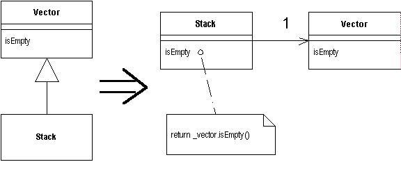

Replace Inheritance with Delegation
A subclass uses only part of a superclasses interface or does not want to inherit data.
Create a field for the superclass, adjust methods to delegate to the superclass, and remove the subclassing.

For more information see page
352
of Refactoring
| Refactoring Home | | Alphabetical List |